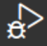

Versión 4: modos de bajo consumo e integración final¶
Bibliografía
Modos de bajo consumo¶
Ya tenemos todos los elementos del sistema para que sea funcional. Quizás quisiéramos —si se hace el diseño correspondiente— diseñar una PCB para desplegarlo en algún sitio. Si hiciésemos esto, muy seguramente alimentaríamos el dispositivo con una batería. Si midiésemos el consumo con un amperímetro, podríamos calcular la autonomía de nuestro sistema. Se habrá fijado que en los dispositivos comerciales como relojes inteligentes, mandos de TV, dispositivos IoT…la autonomía puede superar de largo varios meses con un uso normal del mismo. Para conseguir esto contamos con los modos de bajo consumo. Buena parte de los microcontroladores que hoy en día se precien cuentan con distintos modos de bajo consumo. Lea la sección "Modos de bajo consumo” del libro de Fundamentos Teóricos 1.
En esta versión, antes de hacer la integración final, vamos a implementar unas pocas funciones para gestionar el modo sleep de bajo consumo en nuestro sistema. Esto se destaca en 2 estados de la FSM de Simone que veremos más adelante y que se muestran en la : SLEEP_WHILE_ON, y SLEEP_WHILE_OFF. Estos estados comprueban si alguna de las FSM de los elementos está, o no, activa, y en caso de que todas estén inactivas, se va a dormir. El sistema se despertará ante alguna interrupción de un timer o interrupción externa (pulsación de botón).
Antes de empezar a implementar las funciones de bajo consumo vamos a partir de una serie de consideraciones de la FSM. En la siguiente sección se detallan mucho más los estados, pero por ahora, nos fijamos en lo relativo al bajo consumo:
-
En bajo consumo desactivaremos el SysTick para que no despierte al sistema cada \(1 ms\). Así pues, el contador del sistema no aumenta mientras se está dormido.
-
Las ISR que generan interrupciones externas —botón y transceptor ultrasonidos— son las encargadas de reactivar el SysTick.
-
La FSM del botón está inactiva en el estado
BUTTON_RELEASED. -
La FSM del transceptor de ultrasonidos está inactiva siempre, pues el dispositivo "solo está funcionando” cuando hay interrupciones del temporizador del trigger, o del input capture del echo. No es bloqueante.
-
La FSM del RGB light está activa si el status indica que está funcionando, y no está ocioso (idle).
-
Las autotransiciones de los estados de la FSM Simone (
SLEEP_WHILE_ONySLEEP_WHILE_OFF) están pensados para cuando esté trabajando en depuración. El depurador genera interrupciones en la ejecución del código que despiertan a nuestro sistema. Como no se trata de interrupciones de nuestros elementos, no pasaremos a los estados, pero debemos dormirnos mientras no se detenga el depurador de nuevo en otro breakpoint. Este es el cometido de dichas autotransiciones.
Procedamos. Como siempre, tenga abierta la página web de la API https://sdg2dieupm.github.io/simone/, ahí están todos los detalles de implementación. Vamos a tocar varios ficheros pero no crearemos ninguno nuevo.
Vamos a añadir las funciones de comprobación específicas de cada máquina de estados.
-
En
fsm_button.c: Añade la funciónfsm_button_check_activity()y su prototipo y documentación del código enfsm_button.h. -
En
fsm_keyboard.cañade la funciónfsm_ultrasound_check_activity()y su prototipo y documentación del código enfsm_keyboard.h. -
En
fsm_rgb_light.cañade la funciónfsm_rgb_light_check_activity()y su prototipo y documentación enfsm_rgb_light.h.
Para terminar, vamos a añadir las funciones HW específicas de manejo del modo stop y sleep en nuestro STM32F446RE. Primero añadiremos algunas funciones generales del sistema en stm32f4_system.c; luego las modificaciones necesarias para restablecer el reloj de sistema SysTick tras una interrupción del botón o del transceptor de ultrasonidos, o de temporizador.
En stm32f4_system.c:
-
Copia el código de
port_system_power_stop()yport_system_power_sleep()de la API. Por tener un orden, puede hacerlo en una parte dedicada a POWER RELATED FUNCTIONS. -
Copia el código de
port_system_systick_suspend()de la API. Por tener un orden, puede hacerlo en la parte dedicada a TIMER RELATED FUNCTIONS. -
Copia el código de
port_system_systick_resume()de la API. Por tener un orden, puede hacerlo también en la parte dedicada a TIMER RELATED FUNCTIONS. -
Implementa la función
port_system_sleep()como indica la API. Por tener un orden, puede hacerlo junto con las anteriores en la parte dedicada a POWER RELATED FUNCTIONS.
En port_system.h:
- Añade los prototipos de las funciones anteriores y su documentación.
En el fichero en el que se encuentran nuestras ISR, interr.c.
-
Añade al principio de la ISR del botón la llamada a
port_system_systick_resume()para reactivar el contador del sistema SysTick, inmediatamente, tras la interrupción de pulsación (en estado inactivo el botón no está pulsado, por eso no estará durmiendo si el botón permanece pulsado). -
Haz lo mismo en la ISR del echo del transceptor de ultrasonidos,
TIM2_IRQHandler().
¡Ya tenemos un sistema eficiente energéticamente! En el futuro ten siempre en consideración la importancia de estos modos de bajo consumo en cualquier sistema embebido que se alimente con baterías. Vamos a unir todas las piezas.
Integración final¶
Ya tenemos todos los módulos de las versiones V1-V3 de Simone desarrollados y probados: botón, transceptor de ultrasonidos y RGB light (LED) RGB. Ahora vamos a integrarlos en el sistema central, y rellenar el main.c del programa. Procedamos:
La máquina de estados del sistema Simone involucra a todos los elementos del mismo y la gestión del bajo consumo. Al ser una implementación puramente lógica y no intervenir aquí ningún elemento HW, todo será desarrollo de la parte COMMON.
Consideraciones de la FSM de Simone¶
¶
Antes de empezar vamos a partir de una serie de consideraciones.
-
La FSM contiene en su estructura las máquinas de estados del resto de elementos del sistema.
-
Es Simone quién define qué es una pulsación larga, o corta. Recuerde que la pulsación larga del botón nos indicará el inicio de la marcha atrás y por tanto el arranque del sistema de aparcamiento Simone, y la pulsación corta servirá para pausar el RGB light.
-
Es esta FSM quién gestiona si el sistema está en pausa, o no.
-
La FSM es única, por lo que no es necesario tener información de identificador.
-
Es la FSM del sistema Simone quién pregunta a los distintos módulos su estado y gestiona la activación del modo de bajo consumo.
La muestra los estados de la FSM de Simone. Ya podemos comprobar que el sistema Simone se enciende y apaga correctamente (meter y quitar la marcha atrás). Ahora crearemos los ficheros de partida. En esta ocasión no hay plantilla de descarga, así que vamos a crear los ficheros nosotros mismos:
-
Crea el fichero
fsm_simone.hen la carpeta correspondiente deCOMMON. Este fichero contendrá la cabecera de la FSM de Simone. Pon las protecciones del fichero para evitar múltiples inclusiones, para lo que tienes que añadir las directivas de precompilador#ifndef,#define, y#endif, como se ha hecho en las versiones anteriores. -
Crea el fichero
fsm_simone.cen la carpeta correspondiente deCOMMON. Este fichero contendrá la implementación de la FSM de Simone.
Vamos a empezar por la cabecera de la FSM de Simone.
COMMON: cabecera de la FSM de Simone¶
Abre el fichero fsm_simone.h y procedamos.
-
Incluye las librerías necesarias según indica la API.
-
Seguidamente crea el enumerado
FSM_SIMONEcon los estados de la . -
Seguidamente declararemos la estructura
fsm_simone_tpara hacerla pública. No obstante, no vamos definir sus campos públicamente. -
Incluye los prototipos de las funciones públicas de la FSM según indica la API.
-
Documenta las funciones, enumerado y tipo nuevo. No olvides incluir el encabezado del fichero con su nombre y la fecha.
COMMON: implementación de la FSM de Simone¶
Vamos a proceder con la implementación de las funciones de la FSM de Simone.
Aunque el sistema Simone es único —no va a haber más que una FSM de este tipo—, estamos implementando una librería. Esta librería no tiene main y se gestionará desde el fichero main.c del proyecto, como veremos más adelante.
-
Lo primero que debe aparecer es la inclusión de cabeceras. Incluya las librerías que indica la API.
-
A continuación completa la estructura
fsm_simone_tcon los campos que se muestran en la y como nos dice la API. De nuevo, es muy importante que la máquina de estados de la simonefsm_testé lo primero.-
*p_fsm_button,on_off_press_time_msypause_rgb_light_time_msson los campos que nos permitirán gestionar el botón. -
*p_fsm_buttones un puntero a la máquina de estados del botón,on_off_press_time_mses el tiempo en milisegundos para considerar que se ha metido la marcha atrás, ypause_rgb_light_time_mses el tiempo en milisegundos para considerar una pulsación corta del botón para pausar el RGB light. -
is_pausedes una variable que nos indica si el RGB light está pausado o no. -
*p_fsm_ultrasound_reares el puntero a la máquina de estados del transceptor de ultrasonidos trasero. -
*p_fsm_rgb_light_reares el puntero a la máquina de estados del RGB light que indica la distancia a un obstáculo por la parte trasera del coche.
-
-
Documenta los campos de la estructura
fsm_simone_t.
Comenzamos con las funciones de entrada o comprobación, ı.e., aquellas que comienzan por check_. Codifica las funciones de entrada /* State machine input functions */.
-
Codifica la funciones
check_on(),check_off(),check_new_measure()ycheck_pause_rgb_light()como indica la API. -
Codifica las funciones de comprobación de actividad para bajo consumo
check_activity(),check_no_activity()ycheck_activity_in_measure()como indica la API. Esta última función es comocheck_new_measure(). Para que la depuración sea más sencilla, no reutilizamos el nombre de la función para saber de qué estado partimos.
Sigamos con las funciones de salida, ı.e., aquellas que comienzan por do_. Codifica las funciones de salida /* State machine output or action functions */.
-
Codifica las funciones
do_start_up_measure(),do_stop_simone(),do_pause_rgb_light()ydo_rgb_light_intensity()como indica la API. -
Codifica las funciones relacionadas con el bajo consumo
do_sleep_off(),do_sleep_wait_command(),do_sleep_while_off()ydo_sleep_while_on()como indica la API.Aunque todas ellas hacen lo mismo, conviene no reutilizar el nombre de la función para poder realizar una depuración más sencilla y saber de qué estado partimos.
Vamos a codificar la tabla de transiciones de la FSM Simone.
-
Codifica, justo debajo de estas funciones privadas, la tabla de transiciones de la FSM de Simone
fsm_trans_t fsm_trans_simone[]. -
Puede ser buen momento ahora para documentar todo el código con Doxygen.
Como en las anteriores máquinas de estado, tenemos que codificar las funciones privadas antes de que las use alguna otra —ya que no están declaradas en la cabecera—. Ya hemos codificado las funciones de entrada y salida, ahora vamos a codificar la única que nos queda.
-
Codifica la función
fsm_simone_init()como se indica en la API y de forma análoga a las anteriores máquinas de estados.Inicializa los punteros a las máquinas de estados de los elementos del sistema Simone y los tiempos de pulsación del botón para considerar una pulsación larga y corta con los datos que se pasan como argumentos. Inicializa también la variable
is_pausedafalse.
Por último, como ya hemos hecho con las anteriores máquinas de estado, vamos a implementar las funciones públicas de la FSM declaradas en la cabecera.
-
Codifica la función
fsm_simone_new()como se indica en la API y de forma análoga a las anteriores máquinas de estados. -
Codifica la función
fsm_simone_fire()como se indica en la API y de forma análoga a las anteriores máquinas de estados. -
Haz lo propio con la función
fsm_simone_destroy().
Compila y comprueba que no tienes errores. Si los tienes, corrígelos. Ya solo queda enlazar todo en el main.c y montar el HW para tener el sistema funcionando.
Integración SW de la FSM Simone¶
Ha llegado la hora de integrar la parte SW del sistema, y depurar. Vamos a escribir las líneas de código necesarias en main.c para probar que funciona. Procedamos:
-
Abre el fichero
main.ce incluye las cabeceras necesarias. -
Define la macro
SIMONE_ON_OFF_PRESS_TIME_MScomo indica la API para definir una pulsación larga como aquella que supere \(1 s\). ¡Ojo, porque el tiempo hay que darlo en milisegundos! Este es el tiempo que se debe mantener pulsado el botón para emular que se ha metido la marcha atrás. -
Define la macro
SIMONE_PAUSE_RGB_LIGHT_TIME_MScomo indica la API para definir una pulsación corta como aquella que supere \(0.5 s\). ¡Ojo, porque el tiempo hay que darlo en milisegundos! -
Después de la inicialización del sistema con la llamada a la función
port_system_init(), crea la máquina de estados para el botón. Dale un nombre representativo (*e.g.*,p_fsm_button). Para ello llama a la funciónfsm_button_new()con los argumentos necesarios. A continuación, haz lo propio con la máquina de estados del transceptor de ultrasonidos trasero, y con la del RGB light trasero. Dales nombres representativos. -
Crea la máquina de estados para el sistema Simone, puedes darle un nombre representativo (*e.g.*,
p_fsm_simone). ¡No pases los valores "a pincho”, usa los#defineque has creado! -
En el bucle
while, lanza constantemente la funciónfsm_xxx_fire(), para las máquinas de estados del botón, el transceptor de ultrasonidos, el RGB light y Simone.Conviene que el sistema sea lo último porque depende de la actualización del estado de las FSM de los elementos anteriores.
-
Por último solo nos queda un aspecto meramente formal, casi académico. Cuando creamos las máquinas de estado con las funciones
fsm_xxx_new()estamos reservando memoria de forma dinámica (con la funciónmalloc()). Cuando las máquinas de estado dejan de usarse, esa memoria debe ser liberada para poder ser usada por otras partes del código. Esa liberación se hará con la llamada a la funciónfsm_destroy().Después del bucle
whilellama afsm_xxx_destroy()para cada una de las FSM pasándole su tipo concreto. Esto libera la memoria de cada una de las máquinas de estado creadas: botón, transceptor de ultrasonidos, RGB light, y Simone.Como se decía, esto es pura ortodoxia, porque el bucle
whiledelmaines infinito, y nunca saldrá de ahí, por lo que nuestras FSM nunca dejarán de usarse y las líneas que acabas de escribir confsm_xxx_destroy()nunca se ejecutarán. No obstante, conviene que sepas que así debería hacerse. -
Compila y comprueba que no tiene ningún error. Si tienes, corrígelos.
Test de integración de la Simone¶
Test de funcionalidades¶
¶
Ya has probado los test de ejemplo de los distintos elementos y que se os han sido proporcionado. Ahora vamos a probar el sistema Simone completo. No se os va a pedir hacer un test formal, pero con todo el trabajo que has hecho, es conveniente que compruebes que todo funciona correctamente. Monta el circuito como se muestra en la . Prueba todo el sistema como en el vídeo demostración Simone. Procedamos:

-
Conecta la placa Nucleo-STM32 al ordenador.
-
Compila y carga el programa
mainen la placa ( Clean and Debug). Comprueba que no tienes errores de compilación. -
Prueba que el botón enciende y apaga el sistema Simone.
-
Prueba que las distancias se muestran correctamente en la terminal del
gdb-server, y que el RGB light se enciende de manera acorde. -
Prueba que una pulsación corta pausa el RGB light pero se siguen imprimiendo los mensajes de log en la terminal. Prueba que estando pausado, si la distancia es menor de lo indicado se enciende el LED en rojo (colisión inminente).
-
Prueba que estando pausado, puedes apagarlo.
-
Prueba que al encenderlo ya no está en pausa.
-
Prueba que, estando apagada, la Simone no responde toma medidas ni muestra nada en el RGB light.
-
Prueba, en general, el funcionamiento correcto como en el vídeo de demostración. Si encuentras algún error, corrígelo.
Comprobación de bajo consumo¶
¶
Comprobaremos que el modo sleep de bajo consumo se gestiona correctamente. Compila y comprueba que no tienes errores de sintaxis o de código. Para comprobar que el sistema está dormido, podemos hacerlo de dos formas:
-
Lo más habitual —si no tenemos acceso a un depurador y si tenemos que caracterizar nuestro producto— sería hacerlo mediante la medición del consumo del microcontrolador (¡no de los elementos HW de nuestro sistema!). Para medir el consumo, ve el punto "6.6 JP6 (IDD)” del manual de la placa 2. Si vas a medirlo, también deberías desconectar los jumpers del
ST-LINKdel conectorCN2. Para ver el ahorro tendríamos que medirlo en ejecución sobre versión final. Esto puedes hacerlo si deseas como funcionalidad extra en la Versión 5, e incluir la información en la documentación del código (ficheroREADME.md). -
Lo que haremos para demostrar que el sistema alterna entre el modo despierto y dormido será depurando. Continúa con la depuración sin poner puntos de parada. Cuando el sistema esté inactivo, pausa la depuración y comprueba que se ha detenido en la línea de código tras la llamada a wait for interrupt (
__WFI()), similar a como se muestra en la . Esto querrá decir que, efectivamente, la ejecución estaba detenida esperando una interrupción, se ha despertado, y ha pasado a la siguiente línea de código.

Test final¶
¶
En pro de hacer una buena documentación de un proyecto —tanto si es para un cliente como si es para los propios desarrolladores de una empresa—, es conveniente tomar imágenes y/o vídeos y presentarlas como demostración. En este caso, lo haremos mostrando una captura del osciloscopio en el que aparezca la señal trigger que excita el transceptor de ultrasonidos, y el eco recibido. Procedamos:

-
Toma dos cables y con las sondas del osciloscopio conéctalos en la protoboard a los pines de echo y trigger del transceptor de ultrasonidos. No olvides conectar los cocodrilos de las sondas a la masa de la protoboard.
-
Configura el trigger del osciloscopio para que se dispare cuando se detecte un flanco de subida en el pin de eco. Ajusta el eje de tiempos hasta que veas bien en osciloscopio ambas señales correctamente. Coloca un objeto fijo delate del transceptor para jugar con la distancia que se muestra en el osciloscopio.
-
Haz que en el osciloscopio aparezcan los cursores de tiempo indicando el inicio y el fin del eco, así como el valor de la medida, como Se muestra en la .
-
Haz una captura del osciloscopio. Usa el programa del ordenador o conecta una memoria
USBen el osciloscopio para descargar la señal. ¡No sirven fotos con el móvil! -
Edita la captura con Paint u otro editor para escribir, según la medida indicada, a qué distancia está el objeto. Debería verse algo como lo de la . Añádela a tu
README.md.
¡Ya tenemos el sistema Simone funcionando! No olvides documentarlo (vídeo "[MatrixMCU] Documentación de código con Doxygen”). En la siguiente versión podrás añadir más funcionalidades a tu elección. Puedes incluir más capturas o imágenes para enriquecer la documentación.
Guarda una copia de su proyecto como simone_v4 para tener un punto de partida para la siguiente versión, y una copia de seguridad por si algo falla. Esta copia súbela al buzón de entrega de la asignatura separada de la que hagas con la versión 5, que tiene otro buzón. ¡Ánimo!
-
Josué Pagán Ortiz. Fundamentos teóricos de sistemas basados en microcontrolador STM32. Universidad Politécnica de Madrid, 2024. ↩↩
-
STMicroelectronics. Um1724 user manual. stm32 nucleo-64 boards. Technical Report, STMicroelectronics, 2020. URL: https://www.st.com/resource/en/user_manual/um1724-stm32-nucleo64-boards-mb1136-stmicroelectronics.pdf. ↩↩